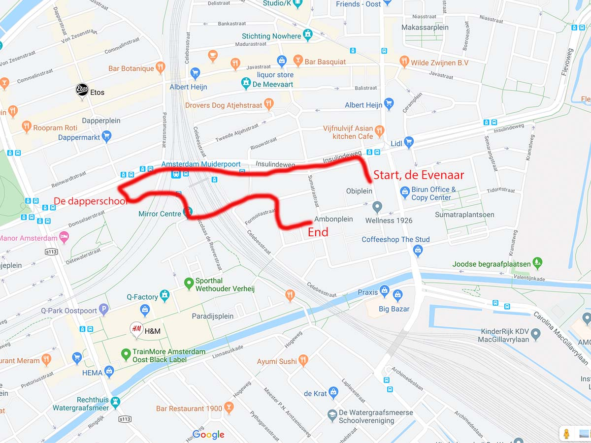

Activities
The light parade
On November the 11th there will be a huge celebration in the West of Amsterdam. Hundreds of people gather together to sing, dance and show the craziest lighting craft they have made. The parade will start at the Indische Buurt, on the schoolyard of de Evenaar, Ambonplein. From there people will head towards de Dapperschool and end the party at the Ambonplein. You can be dressed as whatever you want and don't forget you're pumpkin crafted basket to put the sweetness in it!
€ 0
Date: 11 November 2019,
from 19:00